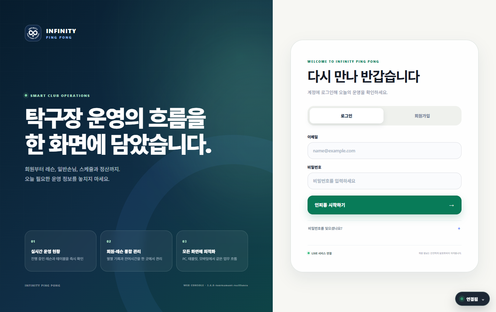

회원·결제 관리
회원 유형, 입금 상태, 보류 회원과 만료 예정 정보를 빠르게 확인합니다.
회원부터 레슨, 일반손님, 정산과 대회까지. 인피퐁 매니저가 탁구장 운영의 복잡한 흐름을 한 화면으로 정리합니다.

ALL-IN-ONE OPERATIONS
회원 유형, 입금 상태, 보류 회원과 만료 예정 정보를 빠르게 확인합니다.
코치별 대기열, 레슨 타이머, 누락 레슨과 그룹레슨 기록을 관리합니다.
탁구대 이용 인원과 시간을 등록하고 실시간 운영 현황을 한눈에 봅니다.
참가 접수부터 예선, 본선, 오더지와 실시간 경기 진행까지 지원합니다.
Windows 프로그램과 웹·모바일이 동일한 Firebase 운영 데이터를 사용합니다.
오프라인 임시 보관, 연결 상태 안내, Windows 알림과 인쇄를 지원합니다.
WINDOWS DESKTOP APP
설치 후 바탕화면과 시작 메뉴에서 바로 실행할 수 있습니다. 기존 웹 계정으로 로그인하면 같은 운영 데이터가 연결됩니다.
INSTALLATION GUIDE
네. 웹과 같은 계정으로 로그인하면 권한에 맞는 회원·레슨·대회 운영 자료가 연결됩니다.
현재 공개 버전은 유료 코드 서명 인증서를 적용하기 전이라 첫 설치에서 SmartScreen 안내가 표시될 수 있습니다.
새 버전이 공개되면 이 홈페이지의 최신 설치 파일을 다시 실행하면 됩니다. 운영 데이터는 삭제되지 않습니다.